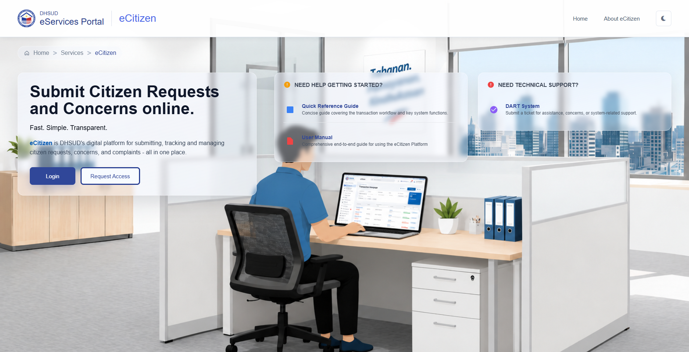
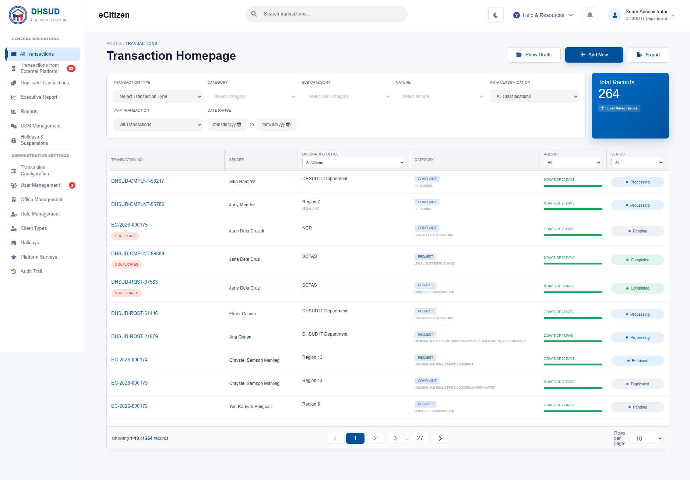
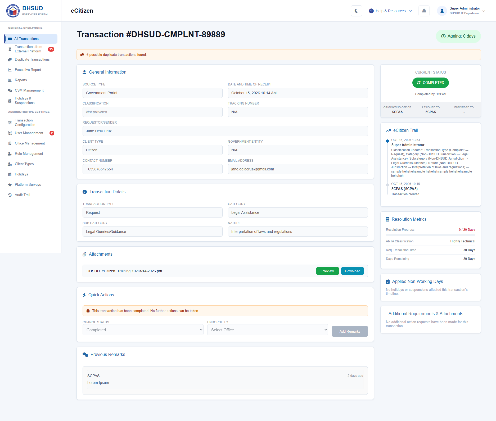

The problem
Citizen requests, concerns, and complaints need a consistent way to be submitted, tracked, and managed across offices.
Government systems
Connecting citizen concerns with public service.

Citizen requests, concerns, and complaints need a consistent way to be submitted, tracked, and managed across offices.
A Laravel and React platform connects the citizen-facing portal with internal transaction management, backed by MySQL. Transaction filters, status tracking, and an activity trail help teams follow each request.
A DHSUD platform for submitting, tracking, and managing citizen requests, concerns, and complaints in one place.

Search, filter, and follow transactions by office, category, ageing, and status.
View full screenshot
Review a request’s information, attachments, resolution metrics, and activity trail.
View full screenshot